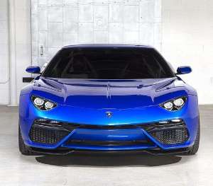

|  |
Lamborghini Asterion
|
The Lamborghini Asterion LPI 910-4 is a concept car that was first unveiled at the 2014 Paris Motor Show. It is a hybrid supercar that was designed to showcase Lamborghini's commitment to sustainability and environmental responsibility, while still maintaining the brand's performance and style.
The Asterion features a hybrid powertrain that combines a 5.2-liter V10 engine with three electric motors, providing a combined output of 910 horsepower. The car is capable of reaching a top speed of 199 mph and can accelerate from 0 to 60 mph in just 3 seconds.
The exterior design of the Asterion is characterized by sleek, aerodynamic lines and a sharp, aggressive front end. The car features a lightweight carbon fiber body and has a relatively low ride height, giving it a sporty and dynamic appearance.
Inside, the Asterion is designed to be both luxurious and comfortable, with premium leather and Alcantara materials throughout the cabin. The car also features advanced infotainment and driver assistance technologies, including a large touchscreen display and a range of sensors and cameras.
While the Lamborghini Asterion was originally conceived as a concept car and was never intended for production, it represented a significant step forward for the brand in terms of hybrid technology and environmental responsibility. It also showcased Lamborghini's ability to innovate and push the boundaries of automotive design and engineering.